原视频：Bilibili · BV1t3dQBAEzd（时长约 77 分钟） 课程：南京大学《操作系统原理》（2026）第 15 讲 整理说明：本书由视频语音转录后经 AI 重构而成；口语已转为书面语；关键时间点标注 (参考时间)，截图占位对应视频位置。
1. 同步是什么
(参考时间: 00:00)
互斥解决「A 与 B 不能同时进」，不解决「必须先 A 后 B」。线程一旦 spawn 就是异步的：各管各的，无法靠约定墙上的钟表强制先后——计算机里 wall-clock 时间既不存在于线程模型，用时间去对齐也极浪费。
同步（多个随时间变化的量在过程中保持约定关系）在现实中有许多机制：
- 同步电机靠磁场锁定；
- 同步电路靠时钟上升沿锁存触发器；
- 乐团靠指挥的手势与排练默契（人耳约 20–30ms 误差就觉得不齐）。
计算机播放音乐不断，不是因为每个线程都卡在绝对时刻，而是 硬件缓冲 + 提前填满：先准备好未来 20ms 的数据再播放。
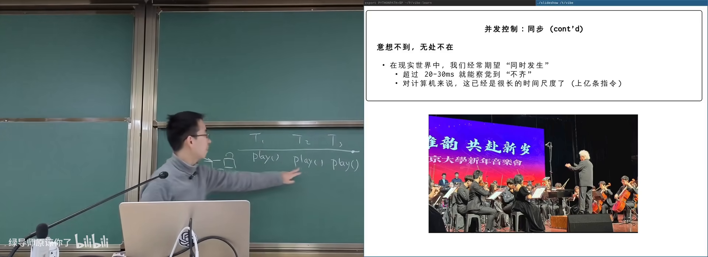
同步电路 / 乐团指挥类比在 B 站打开 (00:08:00)
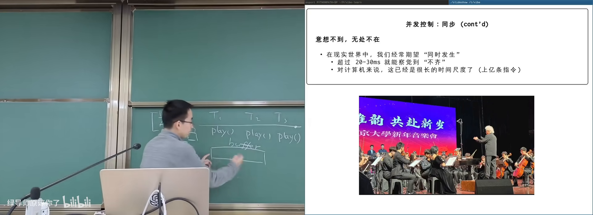
双缓冲播放：先填满再播在 B 站打开 (00:09:20)
图：可关注 20ms 缓冲如何抹平调度抖动。
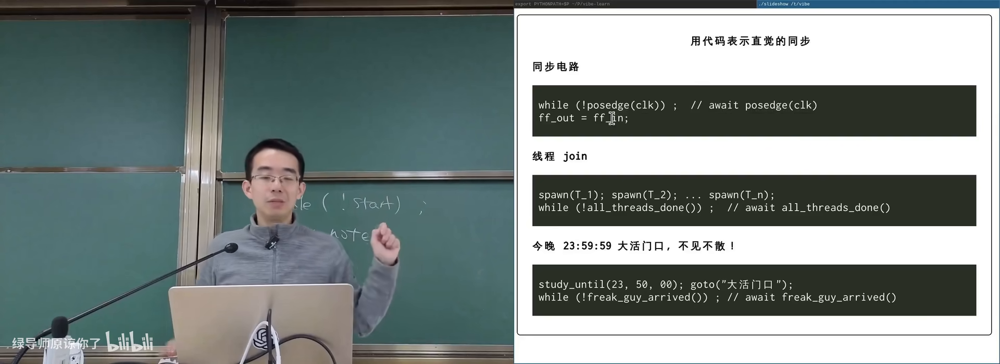
join / 不见不散 / 上升沿：同一等待结构在 B 站打开 (00:11:40)
图：可关注三种场景都是「条件未达则等」。
1.1 共同结构：等一个条件
| 场景 | 同步条件 |
|---|---|
| 乐手 | 指挥给出本拍 |
| 触发器模拟 | 时钟上升沿到达 |
| join | 所有工作线程结束 |
| 室友「不见不散」 | 双方都到达 |
先到者必须等待；条件达成瞬间形成全局同步状态——此时可以用 assert 写清世界是什么样。同步也定义 happens-before（A 发生在 B 之前的时间偏序）：同步点之前的事先于之后的事。
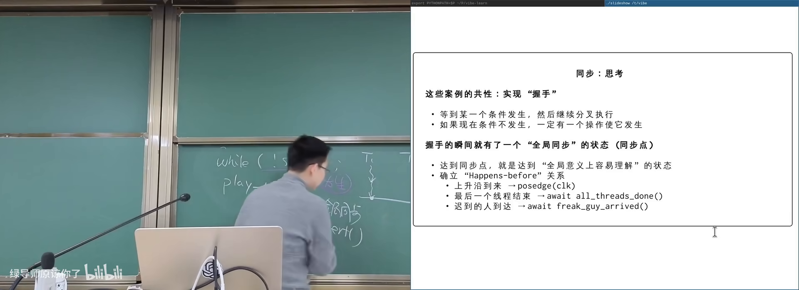
happens-before 与全局同步点在 B 站打开 (00:15:30)
flowchart LR
A["异步线程各自推进"] --> C["同步条件不满足则等待"]
C --> G["全局同步瞬间：cond 成立"]
G --> B["之后可 assert 并继续"]
2. 自己实现同步：正确但浪费
(参考时间: 00:16:40)
目标：多个演奏线程都等指挥「放拍」。共享状态例如 conductor.beat。
// 等待同步条件（示意）
do {
lock(m);
int b = conductor.beat;
unlock(m);
if (b >= my_target) return;
/* 忙等：不断再检查 */
} while (1);
指挥线程在回车后 lock，beat++，unlock。
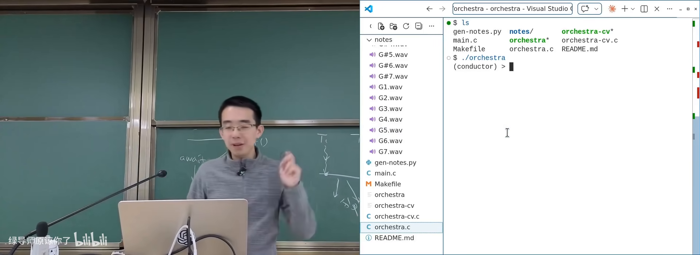
乐团同步：不放拍则无声在 B 站打开 (00:20:30)
图：可关注「条件不满足时线程全部卡住」。
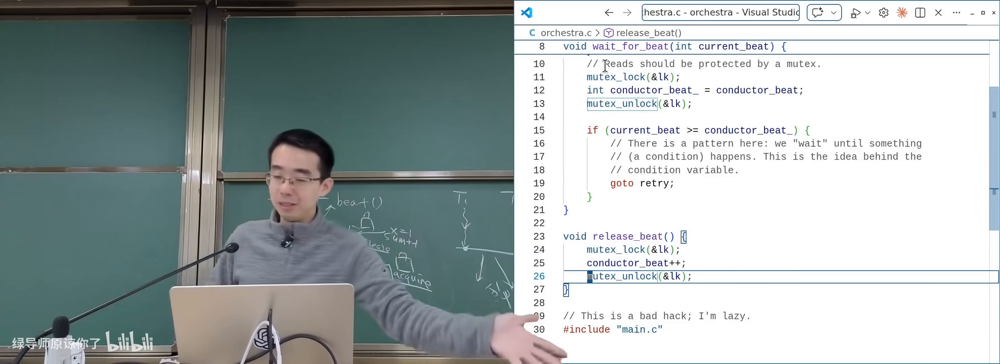
wait_for_beat 忙等实现在 B 站打开 (00:23:40)
图：可关注循环读 beat 号的 spin 结构。
问题：忙等（spin，空转着反复检查条件）浪费 CPU。同步条件可能几秒甚至几天才满足，让出 CPU 才合理。
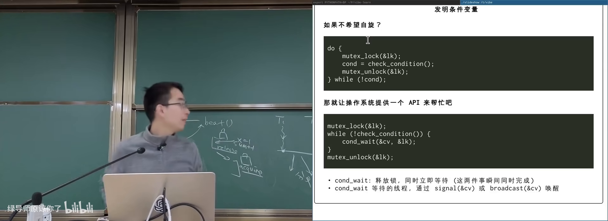
问题：忙等浪费 CPU在 B 站打开 (00:24:50)
3. 条件变量与万能模板
(参考时间: 00:25:00)
条件变量（condition variable，让线程在条件不满足时睡眠、条件可能满足时被唤醒的同步原语）把「检查条件 + 睡眠」做成库/系统接口，底层多由 futex 等实现。
3.1 万能同步模板
lock(mutex)
while (!condition) {
cond_wait(cv, mutex) // 原子地：释放锁 + 睡眠
// 被唤醒后再 acquire 锁，回到循环
}
/* 持有锁，且 condition 为真 */
... 临界操作 ...
unlock(mutex)
改条件的一方（持同一把锁）：
lock(mutex)
/* 修改共享状态，使 condition 可能为真 */
cond_broadcast(cv)
unlock(mutex)
3.2 wait 语义为何关键
cond_wait 必须原子完成「放锁 + 入睡」，避免：刚放锁就被唤醒却再次睡着（丢信号）。返回前会重新抢锁；回到 while 再检查条件——防止虚假唤醒或条件已被别人消耗。
因此模板给出的不变量：
- 循环体内（睡眠点）：持有锁，且条件不满足；
- 循环退出后：持有锁，且条件满足——正是可 assert 的全局同步状态。
课程建议：凡可能让条件成立的代码路径，持锁 broadcast 即可，正确性优先于精打细算的 signal。
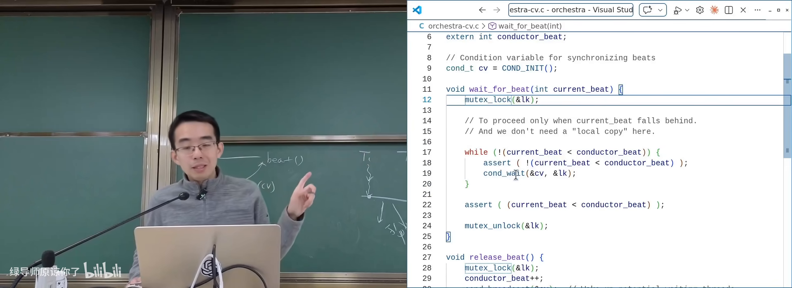
条件变量模板时序在 B 站打开 (00:31:00)
图：可关注 wait 释放锁、唤醒后重新加锁。
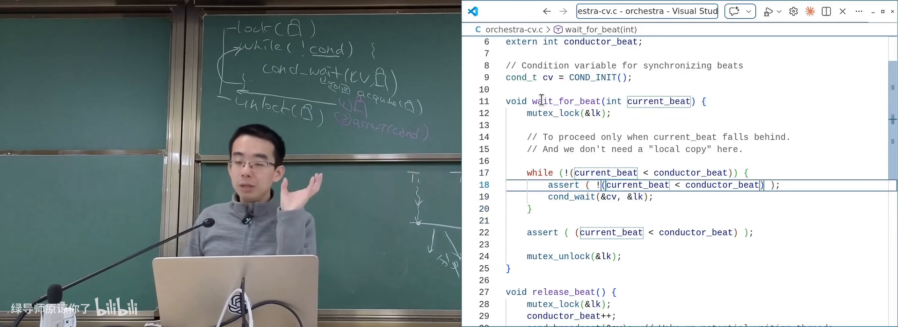
assert：循环退出时持锁且 cond 为真在 B 站打开 (00:34:30)
图：可关注模板给出的可验证不变量。
4. 生产者–消费者：同步的主模型
(参考时间: 00:37:50)
生产者–消费者（一类线程放入任务/数据，另一类取走处理；共享有界缓冲区）也叫 master–slave（现多称 scheduler–worker，调度者与工人）。HTTP 网关放请求、后端取请求处理，教务系统即此模型。
约束：
- 缓冲区有界，满时生产者等、空时消费者等；
- 放入与取出都必须互斥访问缓冲结构。
同步条件写法：
- 生产者：
while (count == capacity) wait; - 消费者：
while (count == 0) wait; - 生产成功后
count++并 broadcast； - 消费成功后
count--并 broadcast。
经典变体：打印左右括号——两类生产/消费约束嵌套深度。
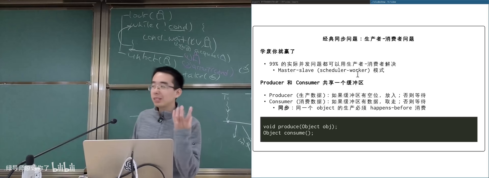
生产者消费者与有界缓冲在 B 站打开 (00:39:00)
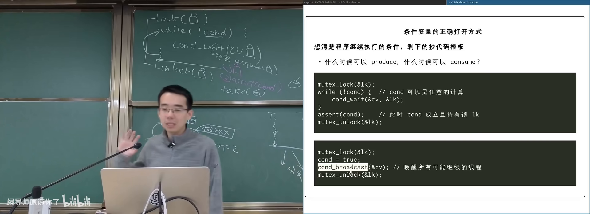
左右括号嵌套深度约束在 B 站打开 (00:45:00)
图：可关注生产者/消费者各自的等待条件。
5. 计算图：万能方法的结构化形态
*(参考时间: 00:50:00，综合后半课）
许多问题可写成计算图（节点=计算，边=依赖）：
- makefile 依赖；
- 数据流变量依赖；
- 神经网络层。
无依赖的节点可并行。用条件变量实现：
- 每节点维护
pred_done计数； while (pred_done != indegree) wait;- 计算完成后对每个后继增加计数并 broadcast。
flowchart LR
A[节点 A] --> X[节点 X]
B[节点 B] --> X
A --> Y[节点 Y]
B --> Y
X --> Z[节点 Z]
Y --> Z
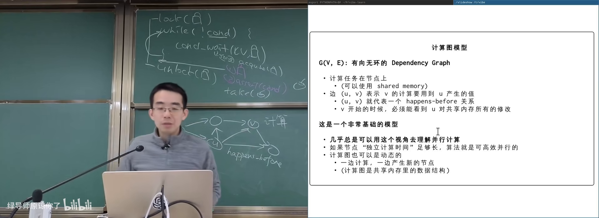
DAG 节点并行与依赖等待在 B 站打开 (01:00:00)
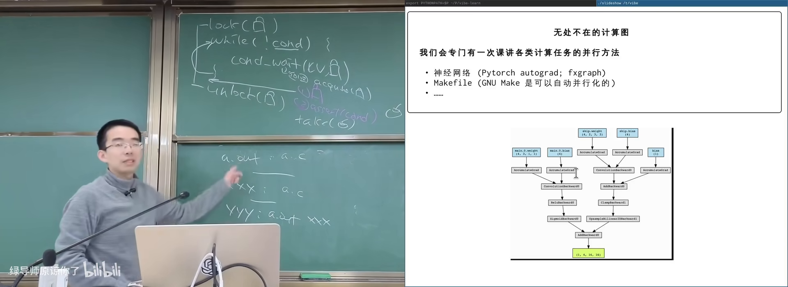
pred_done 计数等待前驱在 B 站打开 (01:02:00)
图：可关注 while (pred_done != indegree) 的条件变量写法。
同一框架覆盖 join、电路模拟、生产者消费者：只要把同步条件写成逻辑表达式，套用模板即可——这就是课上所说的万能同步方法。
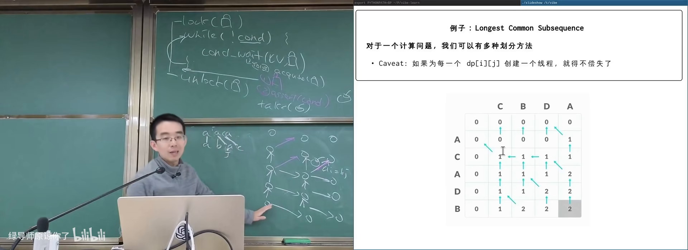
万能模板：把问题还原为 cond在 B 站打开 (01:05:00)
附录：概念补给
同步（synchronization）
- 是什么：使多个执行流在约定的相对时序上推进。
- 课上为何出现：互斥之外的另一大并发控制目标。
- 和什么像：乐队按指挥把拍子对齐。
异步（asynchronous）
- 是什么：各执行流独立推进、不保证相对先后。
- 课上为何出现：spawn 后的默认状态。
- 和什么像：各自出发，谁先到不确定。
happens-before
- 是什么：程序语义中事件先后的偏序关系。
- 课上为何出现：同步点建立可推理的时间隔断。
- 和什么像：必须先报名才能考试。
忙等 / 自旋等待（spin）
- 是什么：不睡眠，反复检查条件。
- 课上为何出现：正确但不经济的同步实现。
- 常见误解：不是所有等待都该 spin；条件很久才成立时应睡。
条件变量（condition variable）
- 是什么：配合互斥锁等待布尔/逻辑条件的原语（wait/signal/broadcast）。
- 课上为何出现：把 spin-loop 变成可睡眠的高效版本。
- 和什么像：挂号后在休息区等叫号，而不是堵在窗口吼。
cond_wait / signal / broadcast
- 是什么：睡眠等待 / 叫醒一个 / 叫醒全部。
- 课上为何出现：模板三件套。
- 常见误解：wait 返回后必须 while 再查条件；单用 if 不够稳妥。
虚假唤醒（spurious wakeup）
- 是什么：wait 可能无明确原因返回，条件仍假。
- 课上为何出现：解释 while 而非 if。
- 和什么像：闹钟误响，你仍要看表再决定起不起。
万能同步模板
- 是什么：lock → while(!cond) wait → 临界区 → unlock；改条件后 broadcast。
- 课上为何出现：把并发问题还原为「写出 cond」。
- 和什么像：一套通用题型解法：关键是把题目翻译成条件。
生产者–消费者
- 是什么：有界缓冲区上放/取任务的经典并发模型。
- 课上为何出现：覆盖面极广的工程形态。
- 和什么像：食堂窗口排队打饭：菜不够等、窗口满了也等。
计算图 / DAG
- 是什么：节点为任务、边为依赖的有向无环图。
- 课上为何出现：同步问题的结构化总框架。
- 和什么像：实验步骤卡：必须先完成前置步骤。
broadcast 优先
- 是什么：条件可能成立时唤醒所有等待者，再各自查条件。
- 课上为何出现：课程推荐的默认正确写法。
- 常见误解：省 signal 有时对，但极易写漏唤醒路径。
书架 Shelf 流水线生成 · 内容衍生自 B 站公开课程视频 BV1t3dQBAEzd